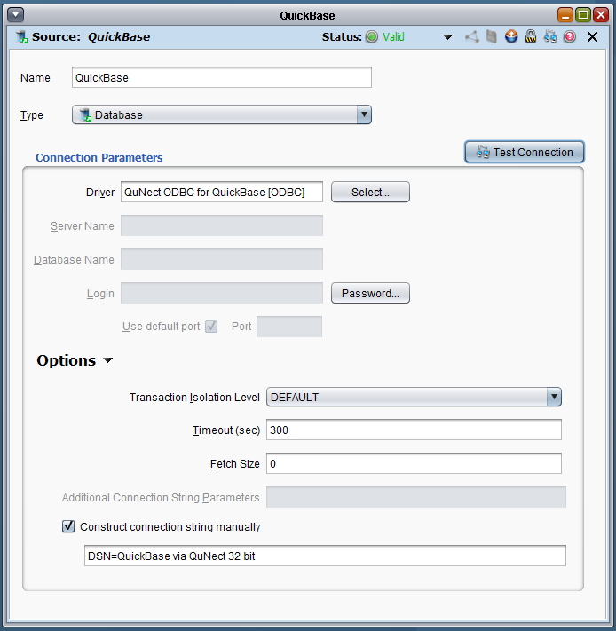

Application Note for QuNect ODBC for QuickBase
Jitterbit and QuNect ODBC for QuickBase
Jitterbit is an ETL tool that will move data into and out of Quickbase.
It can transform the data as it moves it from source to destination as well.
In the QuNect ODBC for QuickBase DSN configuration dialog under
Characters allowed in field names (except for MS Access)
please choose:
letters, numbers and underscores, no colons.
This will allow Jitterbit to display the field names in it's mapping configuration dialog.
Below is the a screenshot of the dialog that you need to configure in Jitterbit
to connect to Quickbase. Notice that you'll need to use the connection string option.
In the connection string you just refer to your DSN name. If you've got a 64 bit installation of
Jitterbit then you would use DSN=QuickBase via QuNect 64 bit.
